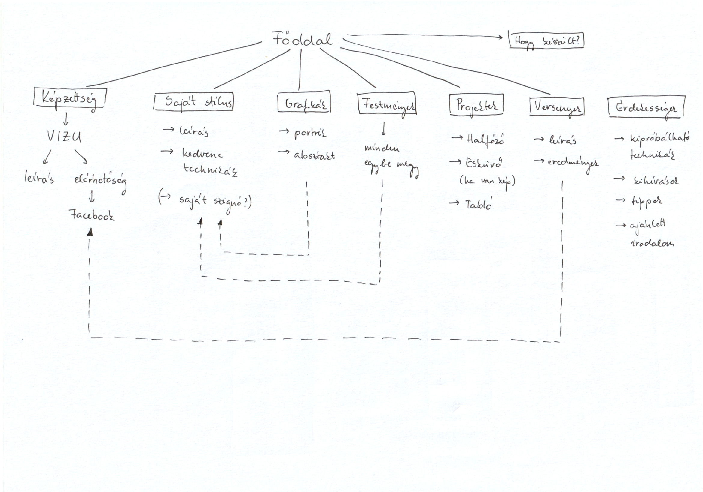
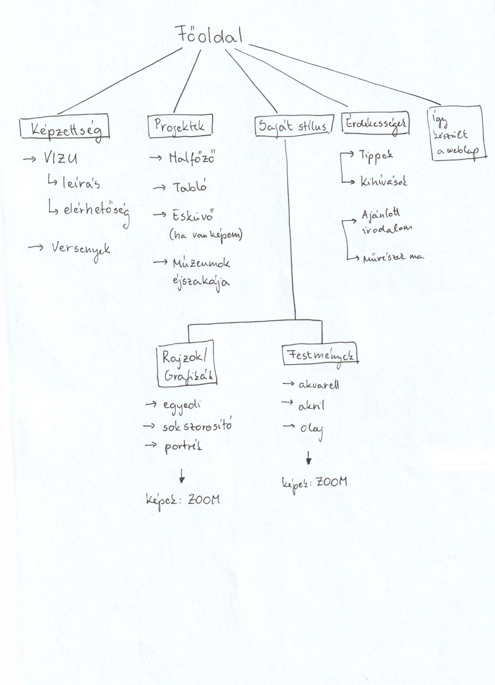
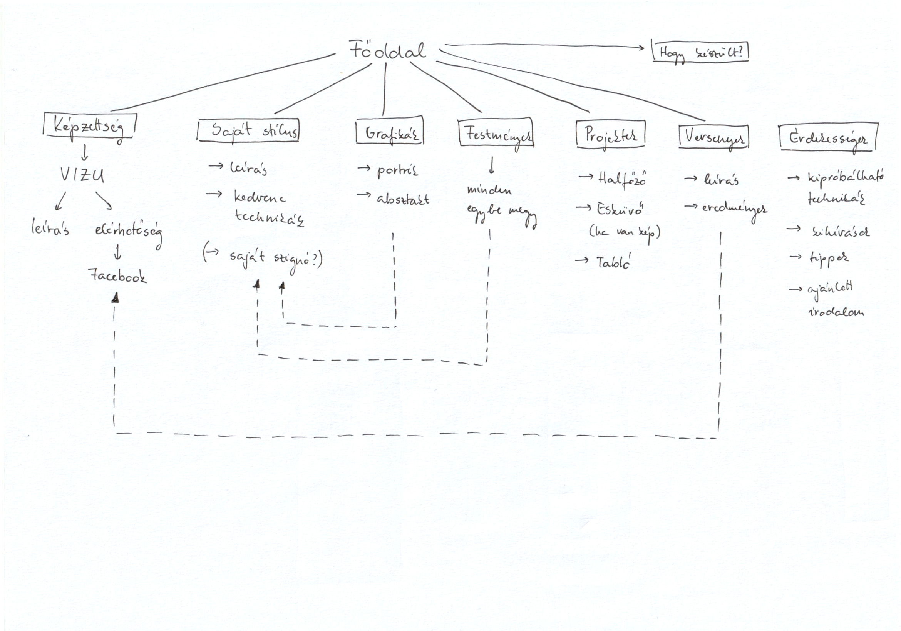
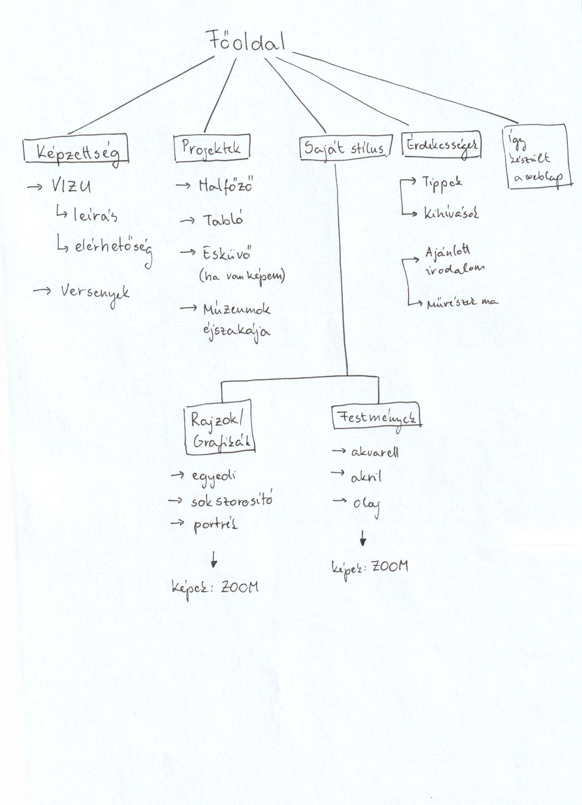
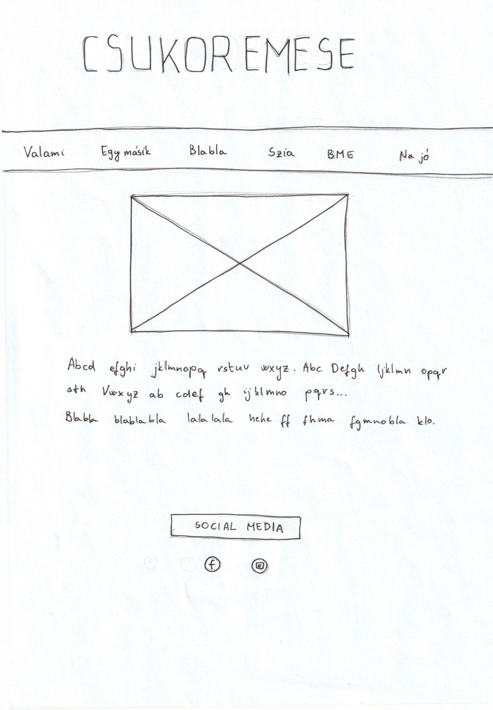
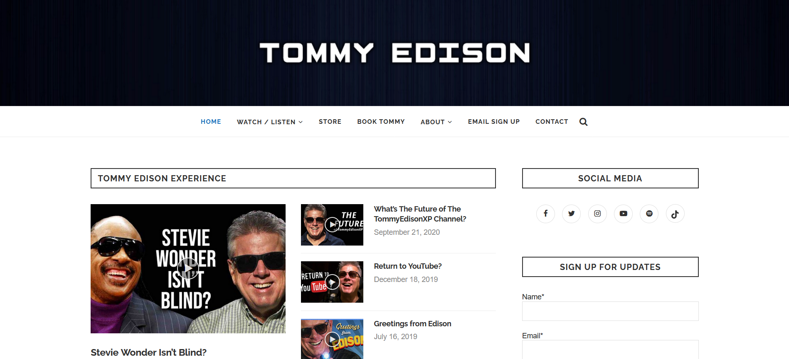
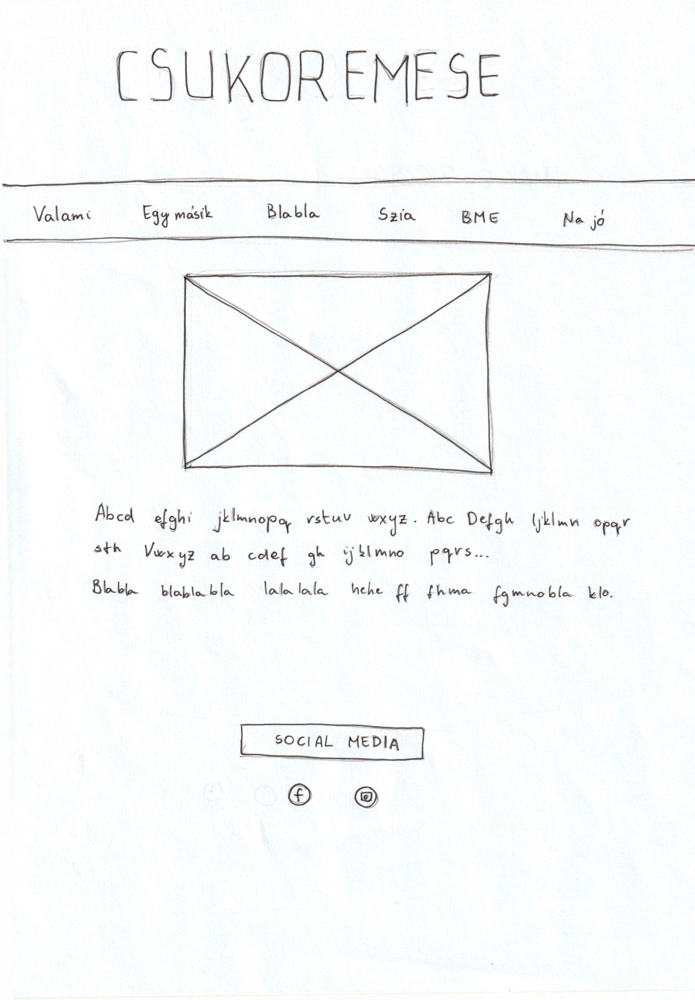
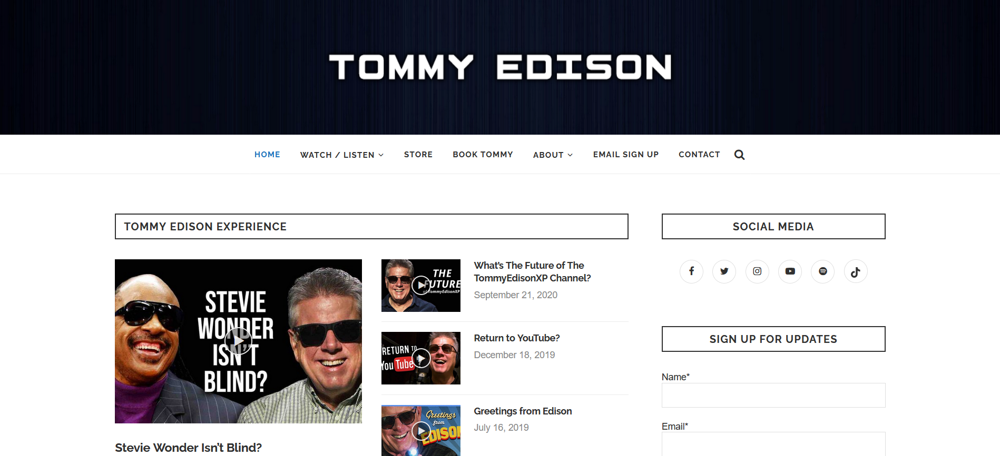
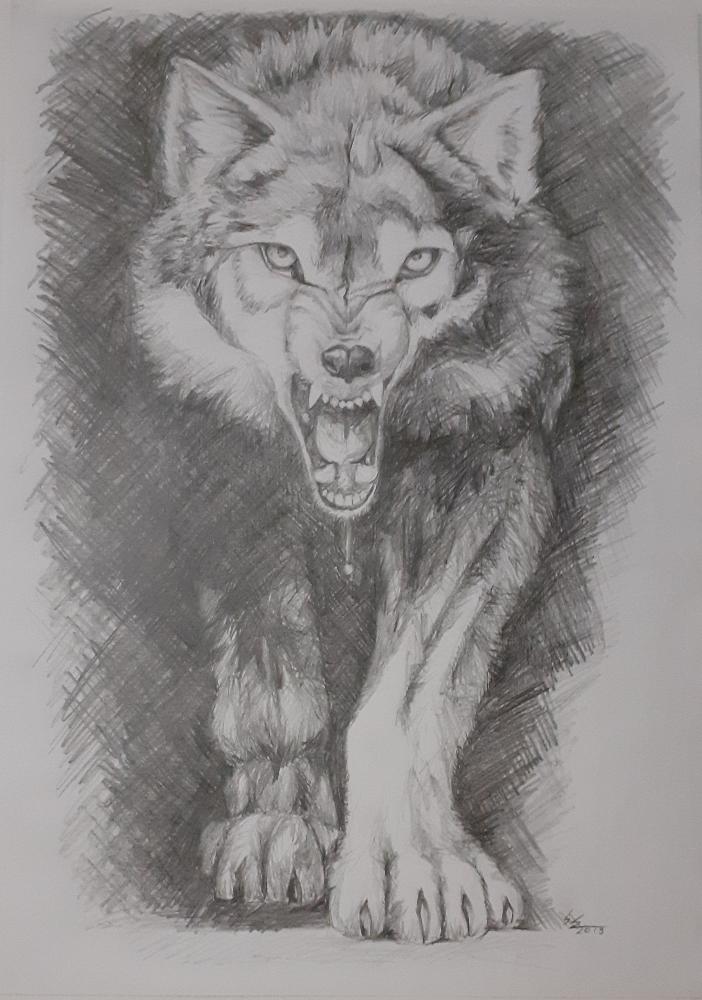

Előkészületek
Nagy érdeklődéssel vártam ezt a projektet, bár nem tudtam, mégis mit fogok kihozni belőle, mivel ez volt az első alkalom, hogy egy teljes weboldalt kellet létrehoznom.
Először is meghatároztam pontosan, mit szeretnék megosztani a portfóliómban. A legkézenfekvőbb a képzőművészeti képzettségem és munkáim bemutatása volt, így emelett döntöttem.
Szerettem volna bemutatni az iskolát, ahol a tudásomat szereztem, a saját stílusomat, külön a grafikai és festészeti alkotásaimat, néhány projektet, amiket végigvittem, és egy-két érdekességet magammal és a képzőművészettel kapcsolatban.
Egy elágazó fa ábrán ábrázoltam, hogyan kapcsolódjanak egymáshoz a különböző oldalak. Ebből több változat is készült:
 
Először is meghatároztam pontosan, mit szeretnék megosztani a portfóliómban. A legkézenfekvőbb a képzőművészeti képzettségem és munkáim bemutatása volt, így emelett döntöttem.
Szerettem volna bemutatni az iskolát, ahol a tudásomat szereztem, a saját stílusomat, külön a grafikai és festészeti alkotásaimat, néhány projektet, amiket végigvittem, és egy-két érdekességet magammal és a képzőművészettel kapcsolatban.
Egy elágazó fa ábrán ábrázoltam, hogyan kapcsolódjanak egymáshoz a különböző oldalak. Ebből több változat is készült:
 
Layout
Ezután megterveztem az alap layout-ot papíron, és ezt rugalmasan kezeltem a weboldal kialakításánál.
Mintaként kész weboldalakat is használtam ötletelésnél.
 
Ami nagy problémát jelentett e későbbiekben, hogy alapból nem "grid" illetve "flex" formában kezdtem el a kidolgozást.
 
Ami nagy problémát jelentett e későbbiekben, hogy alapból nem "grid" illetve "flex" formában kezdtem el a kidolgozást.
Tartalom
Mivel az alkotásaimról és projekteimről szerettem volna tartalmat készíteni, a műveket be kellett fotózni, ami nagy kihívás volt. A végeredmény nem lett tökéletes a nem megfelelő fényviszonok miatt, de véleményem szerint a lényeget átadják így is, több képen utólagos munkálatokat végeztem a jobb minőség érdekében, filtereket és egyéb módosító hatásokat kerülve, csak a fényességen, néhol a kontraszton javítva.


A tartalom szövegrészét a kezdetben "Lorem ispum"-mal helyeztem el, majd a tényleges megfogalmazás a weboldal készítés utolsó fázisában történt.
Nehézségek
- A legnagyobb nehézséget a responsive nézet kialakítása okozta. Kezdetben nem grid-rendszerben építettem fel a weboldalamat, így ezt nem igazán tudtam megvalósítani, újra kellett gondolni az egészet és átrendezni, átírni a dolgokat.
- Nagyon nehéz volt kitalálni, hogy az Érdekesség fül alatt található két "details" tömböt hogyan lehet egymás mellé helyezni úgy, hogy ki lehessen őket nyitni úgy, hogy nem mozduljanak el, ne ugarjanak ki a képernyő teljes szélességére, hanem maradjanak egymás mellett. Először griddel. majd táblázatos módszerrel próbálkoztam, végül egyszerűen a két details tömböt egymás mellé lebegtettem float-tal, és megpróbáltam ezt responsive-vá tenni, több-kevesebb sikerrel.
- Ami még megnehezítette és meghosszabította a készítés folyamatát az volt, hogy különböző elnerdezéseket szerettem volna kipróbálni minden oldalon, így minden oldalon más szerkezeti felépítést kellett felépítenem, és "responsive"-vá tennem. Ezt azért szerettem volna mindenképp véghezvinni, hogy egy kinézetre is tartalmas, változatos és érdekes portfóliót tudjak összeállítani.
Sokat foglalkoztam ezzel a projekttel, nagyjából három hétig késztettem ezt a weboldalt, míg végül olyan eredményt kaptam, amivel elégedett vagyok.